ISTIstanbul, 2021
DUBDublin, today
- Passenger
- Gokhan Asan
- Class
- Tech + Business
- Based in
- Dublin, Ireland
- Work status
- Stamp 4, no sponsorship
- Certified by
- Microsoft, IBM
- Gate
- Open to new roles
I connect technology and business: ten years of IT, B2B sales and operations, plus software I design and ship myself.
A point-of-sale platform that runs in the browser on any computer, tablet or phone, with no installation or special hardware. Venues manage tables and checks, a QR menu in eight languages with ordering and waiter calls, stock that is deducted by recipe when a check closes, reservations, several branches, staff shifts and live reports.
It connects to Turkey's main delivery platforms and fiscal payment terminals, so online orders and card payments flow straight into the till. A kitchen display, AI forecasting and a subscription model with a free trial are part of the product.
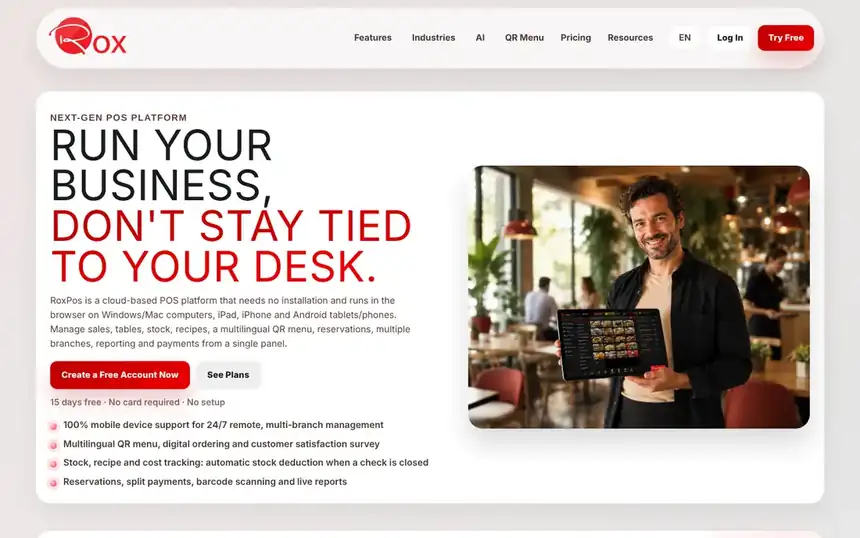
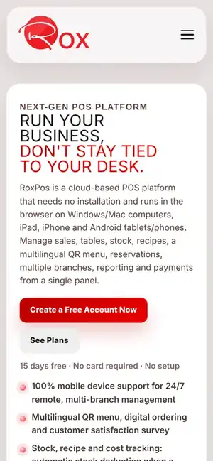
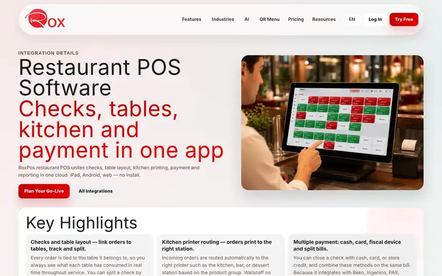
A B2B catalogue and ordering site that supplies castors, wheels and machine components from Türkiye to customers in Ireland, the UK and Europe. Buyers filter the range by load, fitting and environment, check requirements in a technical centre with a load calculator, and send one structured quote request with drawings or photos.
Behind the catalogue sits an operations portal for sales, procurement, inventory, warehouse barcode scanning, logistics and finance. The site runs in twelve languages. It brings together my industrial sales years and my software work.
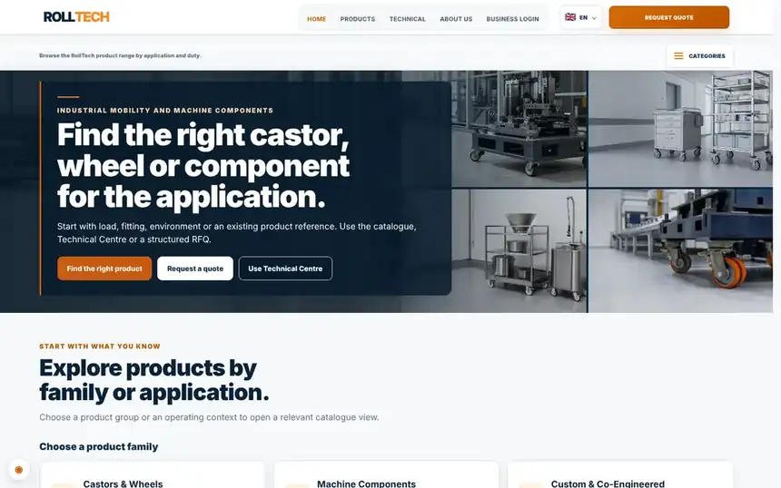
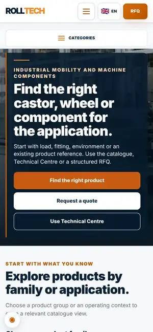
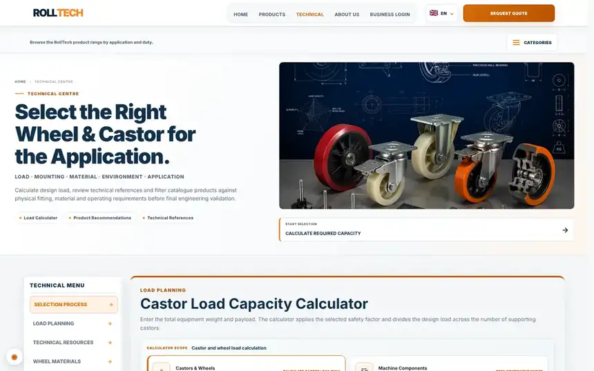
The store's whole sales cycle in one place: customers, price quotes, orders, deliveries, technical service, invoicing and collections. Each day opens with a "today" view: alerts for anything late, the next seven days of deliveries and payments, a shared to-do list and a live activity feed from every device in the store.
Staff log in with their own accounts and permissions, and everyone works on one live cloud database. Reports cover monthly sales, best sellers, gross profit against unit cost and card instalments by bank, with a switch to hide sensitive figures on screen. A catalogue of nearly 1,200 products tracks stock, deliveries are planned by region and exported in the manufacturer's format, invoices are reconciled against the manufacturer's billing, and years of past sales were imported from Excel. On phones it becomes a mobile app with a quick "new sale" button.
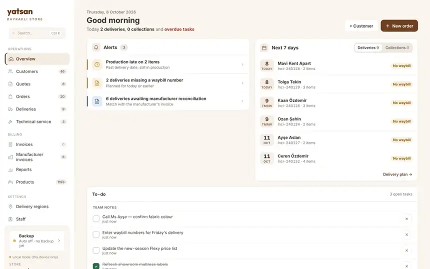
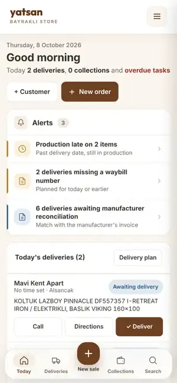
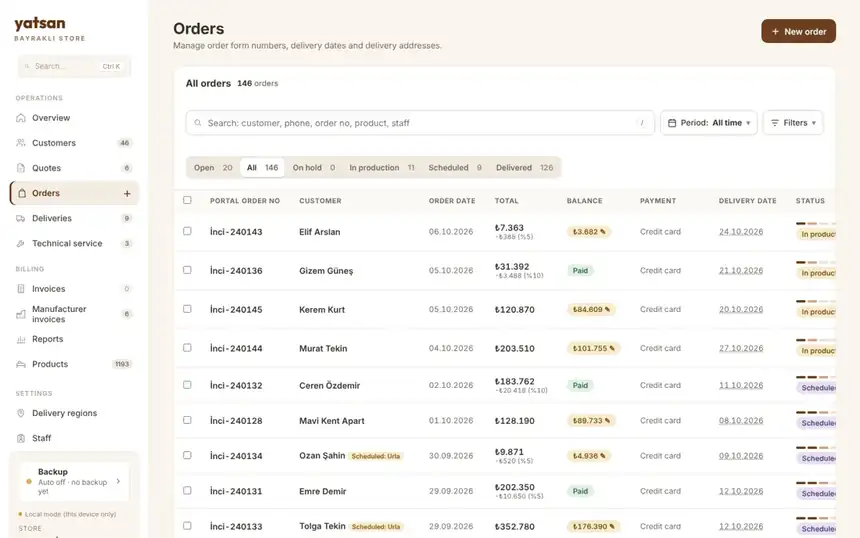
A complete gym platform with three sides: members, coaches and a dietitian. Members book in-person or online lessons, check in with a QR code, log workouts and personal records, track measurements and progress photos, and follow a nutrition plan. Coaches and the dietitian get their own panels to manage members, programs and meal plans.
I designed around 80 screens, including package renewals and freezes, payments, messaging, a blog and events, a shareable progress report, Turkish and English versions, and offline and error states.
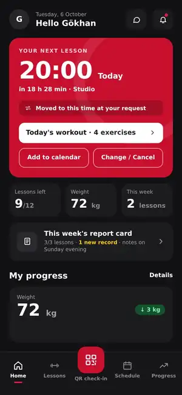
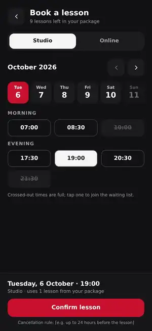
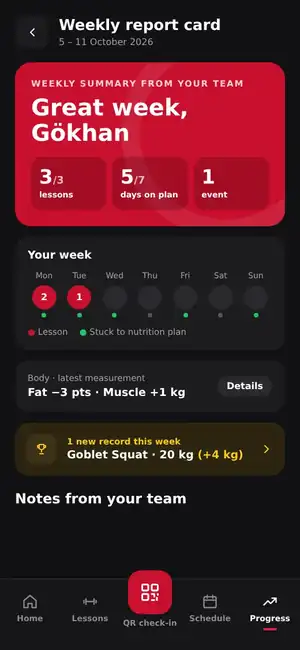
Ground service agent and ramp operations. Aircraft turnarounds under strict safety and on-time targets.
Passenger service agent and operations coordinator. Check-in, boarding gates and the escalation point for complex travel-document cases.
Business development manager for B2B and corporate accounts. Grew the corporate portfolio with CRM-led account management and ran local Google Business presence.
Area sales manager in technical and industrial sales, managing a regional distributor network and credit control.
IT consultant. Hardware, network and software support for corporate infrastructure.